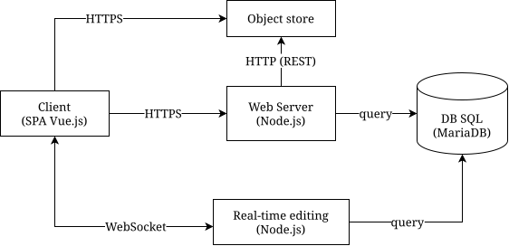

Componenti principali del sistema:
- Client: applicazione frontend SPA (single page application) per l'interazione utente e l'editing reattivo.
- Web server: backend applicativo che gestisce l'autenticazione, l'interazione col database ed i permessi degli utenti.
- Real-time editing: servizio dedicato alla sincronizzazione in tempo reale dei documenti che vengono modificati.
- DB SQL: database relazionale per la persistenza di dati strutturati (utenti, documenti, permessi...).
- Object store: sistema di archiviazione dei file multimediali allegati ai documenti.

Client (Vue.js)
Applicazione single-page eseguita nel browser dell'utente. Si è scelto Vue.js per creare l'interfaccia utente come SPA, che aggiorna DOM senza ricaricare l'intera pagina. Comunica via HTTPS con il web server usando JSON come frmato di scambio, via WebSocket con il servizio di real-time editing per mandare e ricevere le modifiche fatte ai documenti aperti e direttamente via HTTPS con l'object store per il download dei file multimediali.
Web server (Node.js)
Gestisce la logica applicativa principale: gestione degli utenti, autenticazione e definizione dei permessi di condivisione dei documenti. Effettua letture e scritture sulla base dati relazionale tramite query SQL e comunica via HTTPS con l'object store per salvare i file multimediali caricati dagli utenti.
Real-time editing (Node.js)
Servizio dedicato esclusivamente alla sincronizzazione delle modifiche simultanee sui documenti.
- Mantiene connessioni bidirezionali persistenti tramite WebSocket con i client che stanno lavorando ad un documento, mettendo in comunicazione quelli connessi allo stesso documento.
- Tiene in memoria RAM i documenti aperti (su cui qualche utente sta lavorando) e scrive periodicamente lo stato aggiornato del documento nel database relazionale.
- Implementa algoritmi per la risoluzione di eventuali conflitti. Ad esempio: se due utenti modificano contemporaneamente la stessa parte di un documento decide come applicare le modifiche e risincronizza i client ad una versione uguale per tutti.
DB SQL (MariaDB)
Database relazionale per memorizzare i dati con forti vincoli di consistenza: anagrafica utenti, liste di controllo accessi (ACL), contenuto dei documenti ed i metadati dei documenti.
Object store
Servizio di archiviazione per salvare gli elementi multimediali binari (foto, video, audio) inseriti nei documenti. L'uso dell'object storage evita di appesantire il database relazionale con dati binari di grandi dimensioni e permette ai client di scaricare le risorse direttamente via HTTPS.